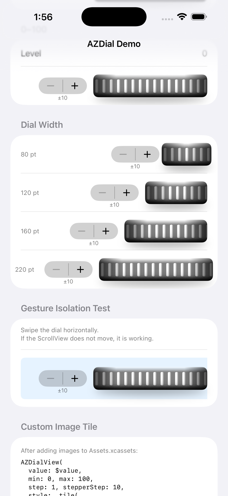
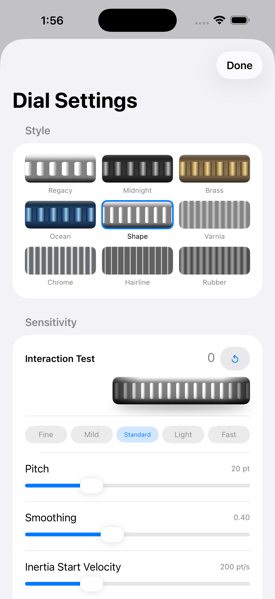

AZDial
SwiftUI スクロールホイール型ダイアルコントロール（iOS / macOS）
iOS・macOS 向けの SwiftUI ダイアルコントロールです。フラットデザインとは一線を画す、リアルな立体表現にこだわったデザインです。さらにグラスデザインとの融合か反逆か——方向性は気の向くまま。公開した今は、いただいたご意見を積極的に取り込んでいきたいと思っています。
2012年に Objective-C コンポーネントとして開発。2025年に SwiftUI で全面再実装しました。Swift Package Manager で利用できます。
デモ



特長
要件
導入
Xcode から追加
File → Add Package Dependencies で以下の URL を入力してください。
https://github.com/SumPositive/AZDial
Package.swift に追記
dependencies: [
.package(url: "https://github.com/SumPositive/AZDial", from: "3.0.0")
]
使い方
基本的な使い方
import AZDial
struct ContentView: View {
@State private var weight = 600 // 60.0 kg（×10 で保持）
var body: some View {
AZDialView(
value: $weight,
min: 300, // 30.0 kg
max: 2000, // 200.0 kg
step: 1,
stepperStep: 10,
decimals: 1,
style: .shape,
dialWidth: 220
)
}
}
パラメータ
| パラメータ | 型 | デフォルト | 説明 |
|---|---|---|---|
value | Binding<Int> | — | 現在の値 |
min | Int | — | 最小値 |
max | Int | — | 最大値 |
step | Int | — | ドラッグ 1 ステップあたりの変化量 |
stepperStep | Int | — | ステッパーボタンの変化量（0 で非表示） |
decimals | Int | 0 | ステッパーラベルの小数点以下桁数 |
style | DialStyle | .shape | ビジュアルスタイル |
dialWidth | CGFloat | 220 | ダイアル幅（80〜220 pt にクランプ） |
tuning | AZDialInteractionTuning? | nil（= .default） | 操作感度チューニング。設定時は pitch より優先 |
pitch | CGFloat | 20 | tuning が nil のときの 1 ステップあたりのドラッグ距離（pt） |
DialStyle
ビルトインスタイル
| スタイル | 説明 |
|---|---|
.regacy | クラシック AZDial ナーリング — Objective-C 版の復刻デザイン |
.midnight | ガンメタル地にシルバーのハイコントラスト |
.brass | ウォームブラス地にシャンパンゴールドのハイライト |
.ocean | ブルーアルマイト地にアイスブルーのハイライト |
.shape | シェイプベースのナーリングタイル （デフォルト） |
.varnia | 細かいマシンドナーリング |
.chrome | ポリッシュクロム・ハイコントラスト |
.hairline | 極細ヘアラインエングレービング |
.rubber | 幅広のマットなラバーグリップ |
カスタム画像タイル
Assets.xcassets に配置した PDF または PNG をタイルとして使用できます。
AZDialView(
value: $value,
min: 0, max: 100,
step: 1, stepperStep: 10,
style: .tile(
light: "MyDialTile",
dark: "MyDialTile_Dark", // 省略可
tileWidth: 20 // 画像の幅（pt）に合わせる
)
)
Swift Package 内のアセットには bundle: .module を指定してください。
スタイルの永続化
DialStyle.id（String）で UserDefaults や iCloud KVS に保存し、DialStyle.builtin(id:) で復元できます。
// 保存 UserDefaults.standard.set(style.id, forKey: "dialStyle") // 復元 let id = UserDefaults.standard.string(forKey: "dialStyle") ?? "" let style = DialStyle.builtin(id: id) ?? .shape
操作感度チューニング
AZDialInteractionTuning でドラッグ・惰性の全パラメータを調整できます。
基本的な使い方
@State private var tuning = AZDialInteractionTuning.default
AZDialView(value: $value, min: 0, max: 100, step: 1, stepperStep: 10,
tuning: tuning)
パラメータ
| プロパティ | デフォルト | 説明 |
|---|---|---|
pitch | 20 | 1 ステップあたりのドラッグ距離（pt） |
velocitySmoothing | 0.4 | 速度サンプルの平滑化係数（0〜1） |
inertiaStartVelocity | 200 | 惰性を開始する最小速度（pt/秒） |
fastSwipeVelocity | 1500 | 低速/高速倍率の境界速度（pt/秒） |
slowSwipeMultiplier | 10 | 低速フリック時のステップ倍率 |
fastSwipeMultiplier | 100 | 高速フリック時のステップ倍率 |
inertiaDecay | 0.94 | 惰性の 1 フレームあたりの速度減衰率（0.80〜0.99） |
inertiaStopVelocity | 15 | 惰性が止まる速度（pt/秒） |
組み込みプリセット
| プリセット | pitch | 倍率（低速/高速） | 用途 |
|---|---|---|---|
.fine | 36 pt | ×3 / ×20 | 精密入力・誤操作防止 |
.mild | 28 pt | ×6 / ×50 | 控えめな動き |
.standard | 20 pt | ×10 / ×100 | 標準（デフォルト） |
.light | 14 pt | ×15 / ×130 | 軽快な操作感 |
.fast | 9 pt | ×20 / ×180 | 高速入力向け |
チューニングの永続化
AZDialInteractionTuning は Codable なので JSON でシリアライズできます。
// 保存
if let data = try? JSONEncoder().encode(tuning) {
UserDefaults.standard.set(data, forKey: "dialTuning")
}
// 復元
if let data = UserDefaults.standard.data(forKey: "dialTuning"),
let saved = try? JSONDecoder().decode(AZDialInteractionTuning.self, from: data) {
tuning = saved
}
AZDialSettingsView（設定シート）
スタイルと操作感度をユーザが調整できる設定シート UI です。sheet で表示するだけで設定画面が完成します。
基本的な使い方
@State private var style = DialStyle.shape
@State private var tuning = AZDialInteractionTuning.default
@State private var showSettings = false
Button("ダイアル設定") { showSettings = true }
.sheet(isPresented: $showSettings) {
AZDialSettingsView(tuning: $tuning, style: $style)
}
カスタマイズ（AZDialSettingsConfiguration）
let config = AZDialSettingsConfiguration(
title: "入力ホイール設定",
styleCandidates: [.shape, .chrome, .rubber],
testRange: 0...999
)
AZDialSettingsView(tuning: $tuning, style: $style, configuration: config)
AZDialSurface（背景のみ）
スクロールするリッジ背景だけが必要な場合（設定画面のプレビューなど）は AZDialSurface を単独で使えます。
AZDialSurface(offset: 0, tickGap: 10, style: .brass)
.frame(height: 44)
.clipShape(RoundedRectangle(cornerRadius: 8))
リリース履歴
| Version | 概要 |
|---|---|
| 1.x | 初期リリース（Objective-C 版の SPM 移植） |
| 2.x | SwiftUI で全面再実装。Canvas ベースのビルトインスタイルを追加 |
| 3.0.4 | 2026/4/10 AZDialBack を AZDialSurface にリネーム。AZDialDemo の英語ローカライズ追加。Swift Package Index 公開 |
| 3.0.5 | 2026/4/16 ビルトインスタイル .shape を追加。デフォルトスタイルを .shape に変更 |
| 3.1.0 | 2026/4/19 AZDialInteractionTuning による操作感度チューニング追加。フリック慣性スクロール・速度倍率対応。AZDialSettingsView 設定シート追加。ステップスナップ改善（離指時のジャンプなし）。ナビゲーション戻るジェスチャーのブロック対応 |